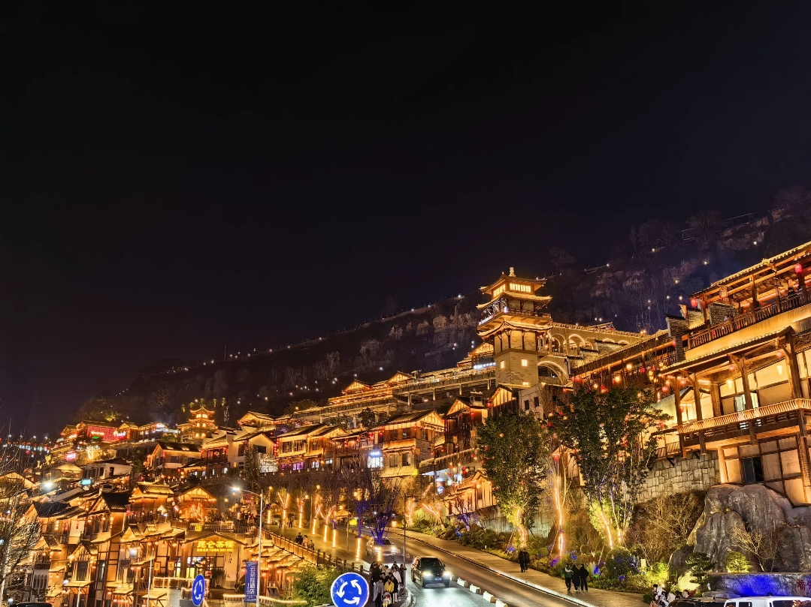

地处三峡库区腹心，长江上游重要枢纽，重庆第二大城市，被誉为“中国烤鱼之乡”“国家森林城市”。万州因“万川毕汇”而得名，自古便是巴蜀文化与荆楚文明的交融之地，如今更是一座山水相依、古今辉映的现代都市。
万州地处长江上游、重庆东北部，是三峡库区最大的移民城市。高峡出平湖的壮丽景观与现代化城市风貌交织，长江穿城而过，南北滨江路蜿蜒数十公里，形成了“城在湖中、湖在山中”的独特画卷。万州拥有1800余年建城史，是国家优秀旅游城市、全国双拥模范城，也是渝东北、川东、鄂西的区域性中心城市。
这里四季分明，气候宜人，森林覆盖率超过53%，拥有众多国家级景区、森林公园和自然保护区。无论是壮美的自然风光，还是厚重的历史遗迹，亦或是麻辣鲜香的特色美食，都让万州成为三峡旅游线上不可错过的核心目的地。
万州集自然奇观与人文胜迹于一体，从亚洲第一瀑到千年古城遗址，从城市绿肺到原始峡谷，每一处都值得细细品味。
万州是中国烤鱼之乡，美食文化源远流长。麻辣鲜香的烤鱼、酱香浓郁的杂酱面、竹笼蒸制的格格，共同构成了独具魅力的三峡风味。
万州交通便捷，高铁、航空、水运、高速路网四通八达，是三峡旅游的核心集散地。